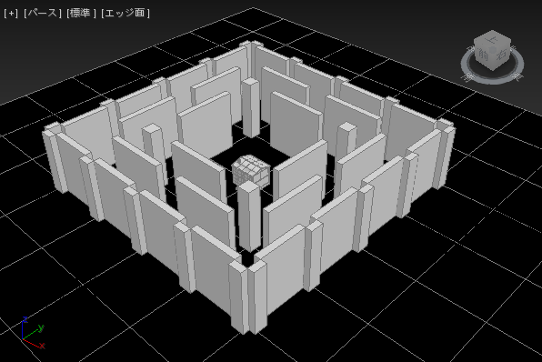
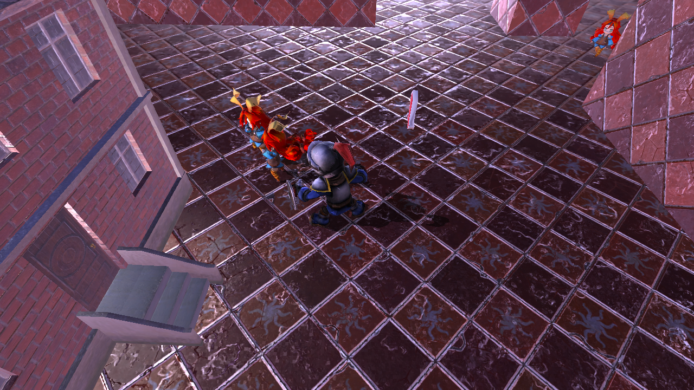
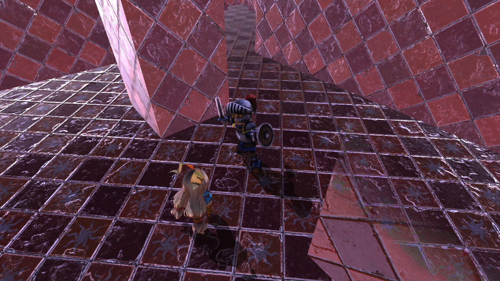
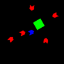
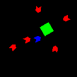

-
経路探索
エネミーの動きがステージの障害物によって阻害されないようにするために、エンジンの機能を使って、経路探索による移動を実装している。3ds Maxで、ステージ内の通れない場所を削除した板ポリゴンを作成し、ナビゲーションメッシュとして出力する。出力されたナビゲーションメッシュを読み込み、ポリゴン情報を元に経路探索を行い、得られた情報を利用してエネミーの移動を行っている。

ステージの3Dモデル
ステージの通れない所を削除した板ポリゴン(ナビゲーションメッシュ)
-
移動について
プレイヤーとエネミーの移動には慣性が乗るようになっており滑らかな移動を表現している。急な移動方向の変化が起こっても、いきなり移動方向が切り替わらずに、緩やかに変化するようになっている。
経路探索による移動だけでは、ナビゲーションメッシュのポリゴン分割量によって、目標の近くまで来たのに遠回りするような挙動を取る場合がある。そこで、目標地点との距離が近くなると経路の移動をやめ、通常の移動処理に切り替えるようにすることで、目標との距離が近いのに遠回りすることが起こりにくくなっている。

-
攻撃について
プレイヤーの近接攻撃とエネミーとの当たり判定の付け方は、距離と方向で行っているが、当たり判定のタイミングに一工夫を入れた。攻撃ボタンが押されたときに判定を出すだけでは、攻撃アニメーションの再生開始時にしか当たり判定が出ずに、違和感の大きい動きになってしまう。そこで、攻撃ボタンが押されると攻撃状態に移行し、一定時間後に攻撃状態から復帰する処理にすることで、攻撃アニメーションの再生時間の間攻撃判定を出し続けることができる。しかし、それだけでは、攻撃アニメーション中の、攻撃の予備動作（剣を振りかぶる）や、攻撃の終了後の動作（振りぬいた剣を元に戻す）にも当たり判定が出てしまう。攻撃状態に移行している間に、当たり判定を出す時間を定め、その間だけ当たり判定を取ることで、アニメーションの見た目と攻撃判定を一致させ、違和感を無くしている。また、攻撃モーション中に移動できてしまうと、見た目や判定に違和感が出てしまうので、攻撃状態に移行している間は、移動の入力を制限して、移動を受け付けなくしている。慣性はかかるので、走った勢いを利用して滑りながら攻撃することは可能になっている。

振りかぶる動作中に当たり判定はない。
-
エネミーの種類
エネミーは防衛対象のみを狙う者とプレイヤーを見つけると狙いをプレイヤーに変える者がいる。防衛対象を狙う者は、一直線に防衛対象に向かい、プレイヤーを無視する。プレイヤーに狙いを変える者は視界にプレイヤーを捉えると、プレイヤーに向けて追跡を開始し、プレイヤーに向けて攻撃してくる。しばらく視界に捉えることが出来ないでいると、プレイヤーに向けての追跡を止め、防衛対象への移動に戻る。プレイヤーを追跡するエネミーを引き付ければ、防衛対象から遠ざけて、まとめて撃破することも可能になる。エネミーの動きを自分でコントロールすることで、楽にクリアすることができるようになっている。

防衛対象を攻撃するエネミー

プレイヤーに攻撃するエネミー
-
アイテム
エネミーを倒すとアイテムを落とすことがある。アイテムを拾うと、最大３つがアイテムスロットに格納され、いつでも使うことができる。最大まで保持している場合はアイテムを新たに入手することは出来ない。アイテムを選択して使用する事で、種類に応じた効果が発動し、不利な状況でも覆すことができる。同じ種類のアイテムを複数保持できる上に、使用するタイミングは自分で決めれるので、自分で戦略を立てたプレイができる。
アイテムスロットに格納されたアイテム。左から、栄養ドリンク、爆弾、修理道具。
-
ミニマップ
エネミーは様々な方向から出現し、防衛対象目掛けて移動してくる。ステージには壁が多く、画面に映る範囲の情報だけでは、迫り来るエネミーの軍団に対応することは難しい。そこで、プレイヤーを中心とした一定範囲をミニマップとして表示し、画面に映っていないエネミーの位置も把握出来るようになっている。ミニマップは、別のカメラから見た映像を表示している。プレイヤーの真上から見下ろすマップカメラを用意し、ミニマップは３ｄのワールドでも２ｄ的な位置を求めるので、ミニマップを描画するカメラは平行投影で描画を行う。ゲームシーンとは別のレンダーターゲットに、マップカメラから映る様子を描画し、レンダーターゲットのテクスチャを、画像として表示している。ただゲームシーンを映すだけでは、ミニマップには必要のないポストエフェクトの効果なども反映されてしまう。正確な位置が分かれば、余計な情報はいらないので、画面をそのまま表示するのではなく、ミニマップに表示したい物の代わりとなるマップ用の別モデルを表示する方式にした。シンプルなマップ用の３ｄモデルを、余計な計算を行わないシェーダーファイルで、表示したい物と同じ位置に表示することで、処理を軽減しつつ、分かりやすいマップ表示を実現している。
 

ミニマップに周囲の位置関係が表示される